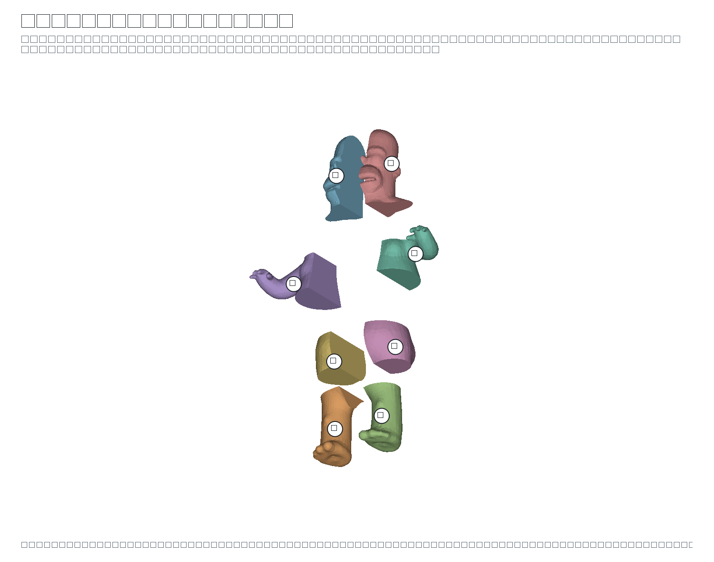
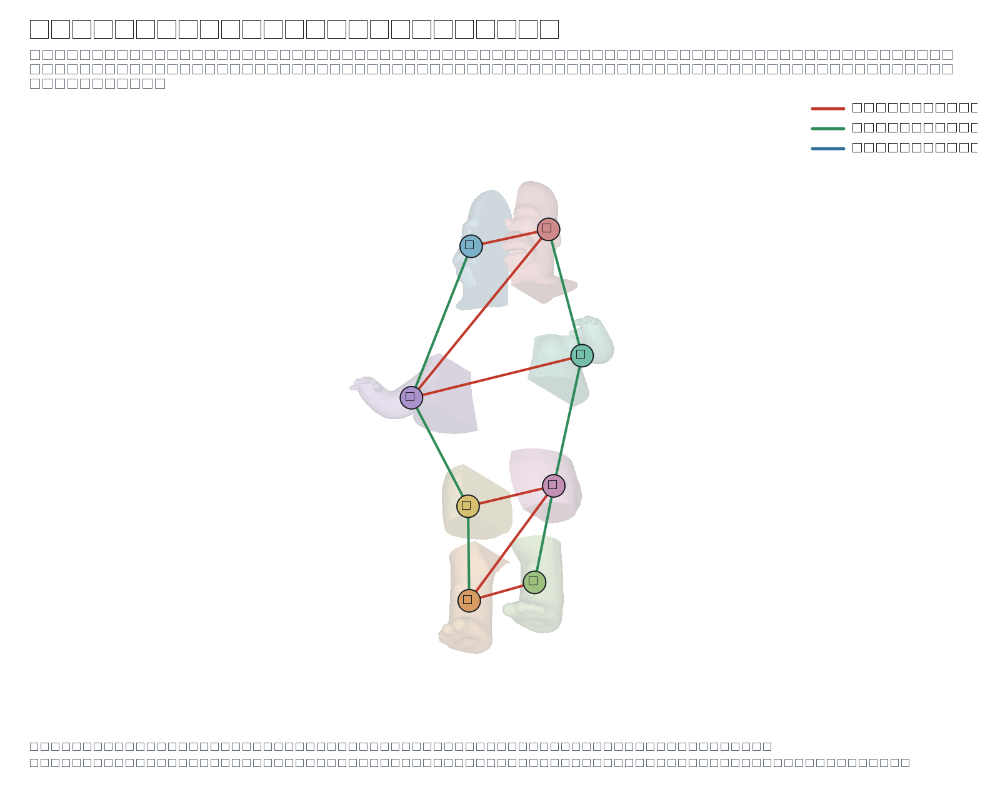
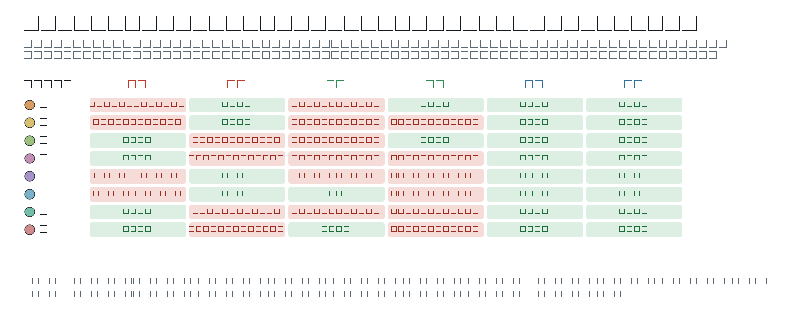
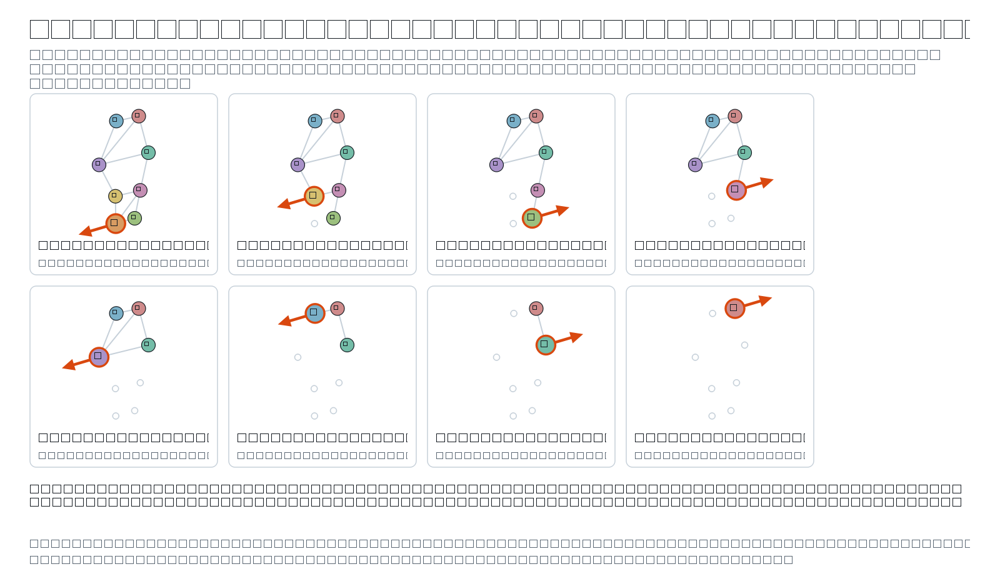

homer
Division report · 2026-09-20 17:09
The model
| Vertices | 6,002 |
|---|
| Triangles | 12,000 |
|---|
| Bounding box | 0.4733 × 0.8404 × 0.2731 |
|---|
| Watertight | yes |
|---|
| Volume (divergence) | 0.0212419 |
|---|
| Volume (voxel fill) | 0.0212225 · 99.9% of the divergence volume |
|---|
Two independent measures. The divergence integral counts every shell it is given, so a mesh with interior geometry reads high; the voxel fill uses parity down each column and reports what is actually solid. Them disagreeing is a fact about the model, not about the division.
The division
| Mode | Random |
|---|
| Divided | V-rep (bounding cage) |
|---|
| Pieces asked for | 8 |
|---|
| Cells produced | 8 |
|---|
| Pieces kept | 8 |
|---|
| Seed | 7 |
|---|
| Voxel grid | 54 × 96 × 31 = 160,704 voxels, 31,394 filled (19.5%), side 0.008765 |
|---|
| Trim (Elber §5) | 8 trimmed to the model, 0 empty cell(s) dropped, 0 failed |
|---|
| Joints | joints: 6 of 12 faces dovetailed (planner-chosen), 8 piece(s) cut, 12 boolean(s); order holds under dovetailed translational DBG - real collision check pending, thinnest feature 0.02 mm - UNDER 3 extrusions, will not print
scale: this model is 1 across, so the 1.2 mm printability floor was lowered to 0.012 to place a joint at all - the pins are correct geometry but will not print until the model is scaled up
rotation: 4 of 8 jointed piece(s) cannot turn - worst stops at 0.0 deg; a bayonet there needs a seating region that is rotationally symmetric about the joint axis |
|---|
Time
| Voxelise the model | 79 ms |
|---|
| Choose the cuts | 77 ms |
|---|
| Extract the pieces | 2 ms |
|---|
| Trim to the model | 4,508 ms |
|---|
| Cut the joints | 1,787 ms |
|---|
| Draw the planner pictures | 892 ms |
|---|
| Total | 7,202 ms |
|---|
The pieces
| Count | 8 |
|---|
| Triangles, all pieces | 16,934 |
|---|
| Largest / smallest side | 0.3263 / 0.2356 · spread 1.39× |
|---|
| Volume, all pieces | 0.0209327 · 98.54% of the model |
|---|
| # | origin X | origin Y | origin Z | size X | size Y | size Z | triangles | volume | % of model | closed |
|---|
| 0 | 0.3759 | 0.1562 | 0.3849 | 0.1287 | 0.2563 | 0.2013 | 2,190 | 0.0029296 | 13.8 | yes |
| 1 | 0.3806 | 0.4126 | 0.3558 | 0.1239 | 0.1247 | 0.2359 | 1,212 | 0.002476 | 11.7 | yes |
| 2 | 0.5045 | 0.1562 | 0.4091 | 0.1193 | 0.2356 | 0.1769 | 2,010 | 0.002581 | 12.2 | yes |
| 3 | 0.5045 | 0.3918 | 0.3558 | 0.1153 | 0.1455 | 0.236 | 1,254 | 0.0025453 | 12 | yes |
| 4 | 0.2625 | 0.5372 | 0.3751 | 0.242 | 0.1532 | 0.2538 | 2,694 | 0.002816 | 13.3 | yes |
| 5 | 0.3859 | 0.6905 | 0.3825 | 0.1199 | 0.3061 | 0.2065 | 2,446 | 0.0026941 | 12.7 | yes |
| 6 | 0.5045 | 0.5372 | 0.3751 | 0.2313 | 0.1328 | 0.2536 | 2,646 | 0.0024215 | 11.4 | yes |
| 7 | 0.5045 | 0.6701 | 0.3827 | 0.148 | 0.3263 | 0.2063 | 2,482 | 0.0024692 | 11.6 | yes |
The assembly planner
| Shared faces | 12 |
|---|
| Neighbours per piece | 2 to 4 |
|---|
| Order found | yes |
|---|
| Assembly order | 7 (-X) → 6 (-X) → 5 (+X) → 4 (+X) → 3 (-X) → 2 (-X) → 1 (+X) → 0 (+X) |
|---|
assemblable under translational blocking; rotational/swept check pending
A division into boxes always has some piece free to leave, so a successful order here is expected and carries little information. The test starts to bite once joints restrict how pieces may move, or once a swept-volume check replaces straight-line blocking.
The planner, drawn

The pieces, pulled apart, numbered with the ids the planner uses.

Step 1 — every line joins two pieces that share a face, coloured by the axis that face is perpendicular to.

Step 2 — for each piece, which of the six straight moves are blocked, and by which neighbour.

Step 3 — the pieces taken off one at a time; reversed, this is the assembly order.